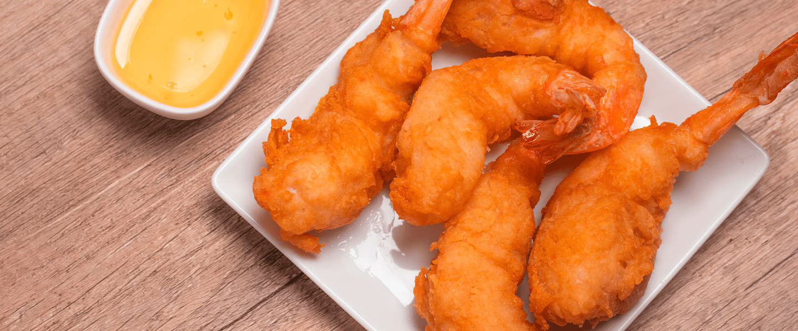
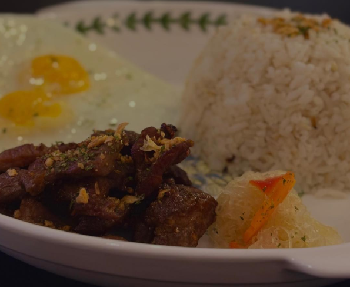
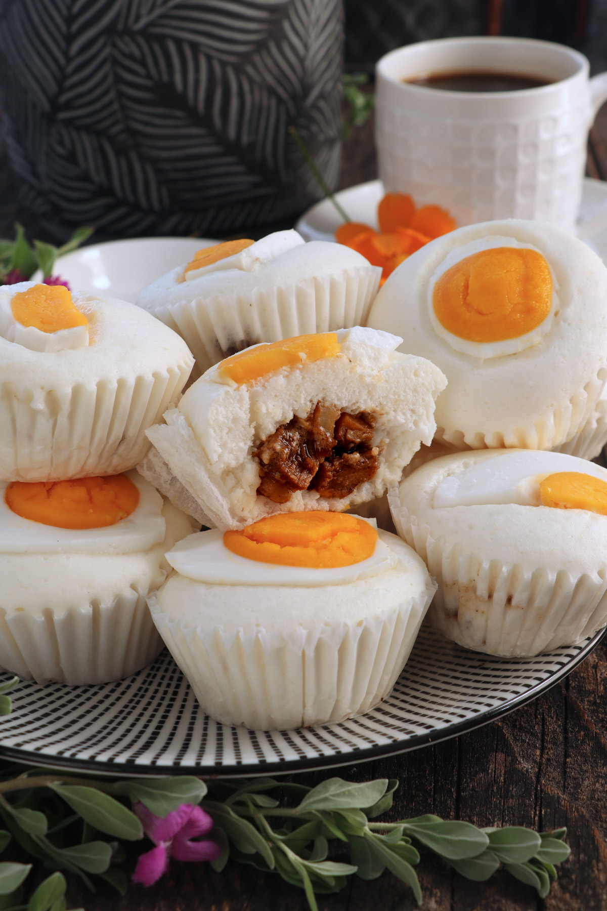
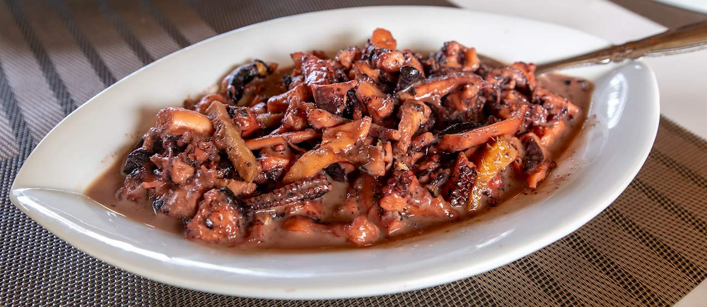
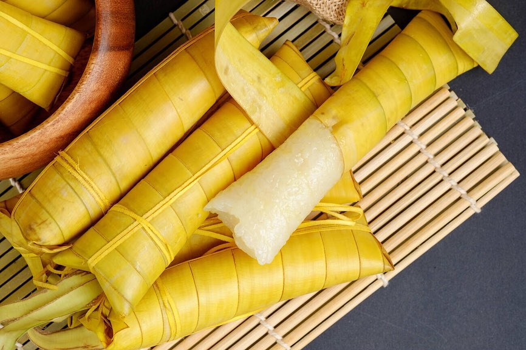
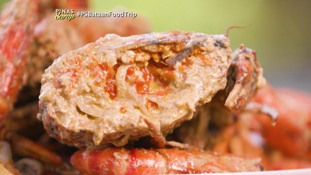
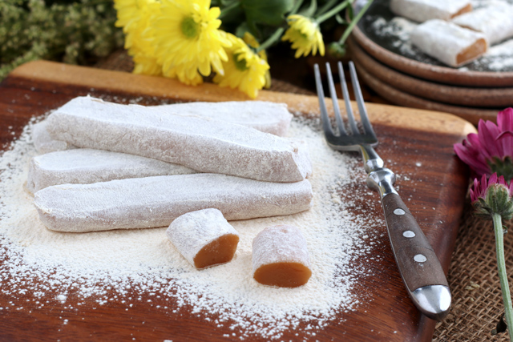
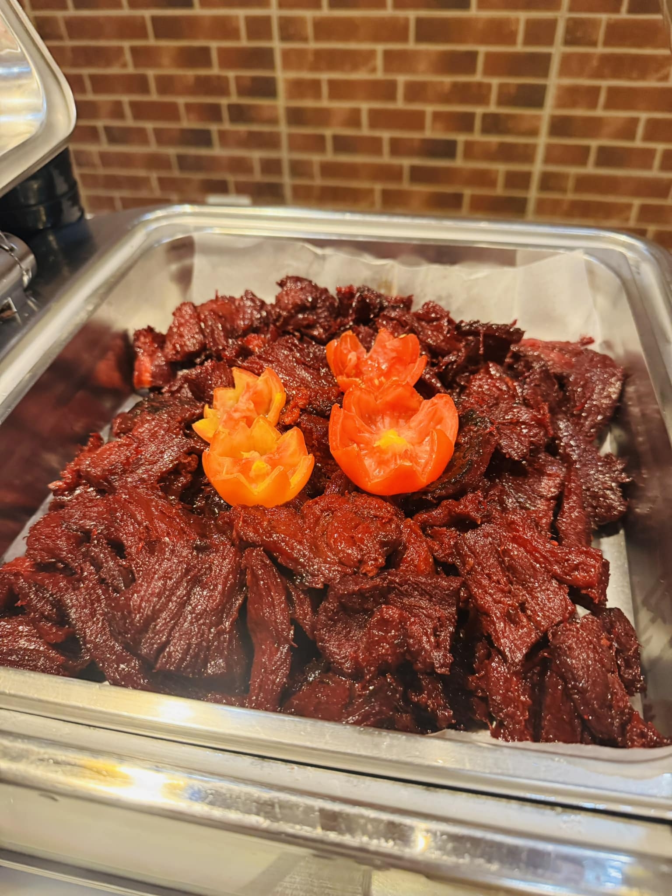

Bataan's cuisine tells the story of its people — a flavorful fusion of Tagalog and Kapampangan traditions, shaped by the sea, the mountains, and centuries of history.

Deep-fried battered shrimp — a Bataan specialty made from Manila Bay's freshest catch. Crispy on the outside, juicy inside, best served with sweet-sour dipping sauce.

Venison tapa (cured deer meat) — a rare Bataaeño delicacy once prepared by indigenous communities. Now served in local restaurants, marinated in garlic, vinegar, and local spices.

A beloved Bataan steamed rice cake stuffed with savory meat filling — a unique local twist on traditional puto that has become one of the province's most iconic pasalubong gifts.

A local take on the classic peanut-based kare-kare stew, made with fresh octopus from Manila Bay. Rich, velvety sauce with bagoong (fermented shrimp paste) — a true Bataaeño comfort dish.

Sticky rice cooked in coconut milk and wrapped in buri palm leaves — a traditional Bataaeño snack passed down through generations, best enjoyed with ripe mangoes or brown sugar.

Mud crabs sourced from Bataan's thriving mangrove forests, steamed or cooked in coconut cream. Prized for their rich, sweet meat — a must-try for seafood lovers visiting the province.

Chewy cylinders of toasted rice flour cooked in coconut milk and rolled in more toasted flour — Bataan's contribution to the Philippine pasalubong tradition, with a delicate sweetness and satisfying texture.

Salted and sun-dried water buffalo meat — a rustic Bataaeño cured meat specialty with deep umami flavor, typically pan-fried and paired with garlic rice. A hearty breakfast staple in local homes.